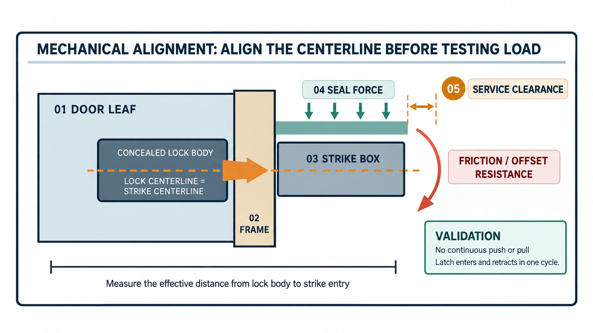

Guia do Centro Técnico WAFU para equipas de engenharia, compras, instalação, integração e marcas OEM/ODM. As fichas técnicas oficiais prevalecem para os limites de cada modelo.
Uma fechadura invisível pode caber na porta e ainda assim falhar em serviço. O eixo, a testa, o abatimento da folha, a pressão da vedação e os erros de montagem alteram a carga real do motor.
Índice
- Cinco verificações geométricas
- O percurso da carga
- A soma das tolerâncias
- Teste da amostra
- WF-019 e WF-026
- RFQ e aprovação
- Conclusão
1. Começar por cinco verificações
Meça espessura, posição do corpo, eixo do trinco e da testa, sentido de abertura e estado das dobradiças. Um teste com a porta aberta não reproduz as forças do aro.
Confirme a entrada do trinco, o atrito lateral, o contacto no fundo e se é preciso empurrar ou puxar a folha. Portas pesadas podem descair com o tempo e as vedações acrescentam força de retorno. Reserve espaço para bateria, ferramentas, cabos e desbloqueio de emergência.
2. Mapear o percurso da carga
O motor enfrenta atrito do trinco, força da vedação, desalinhamento, transmissão interna e erro de montagem:

A relação ajuda a perceber a tendência, mas não substitui o ensaio de binário numa amostra representativa.

3. Avaliar a soma das tolerâncias
O abatimento da porta, o desvio da testa, os furos e a compressão da vedação reduzem em conjunto a folga útil. Registe as medidas antes e depois da montagem e após os ciclos.
4. Testar a carga da amostra
Teste porta aberta, porta fechada normalmente, vedação comprimida e ligeiro desalinhamento. Registe o fecho completo, o recuo do trinco, a assistência manual, o ruído, a alimentação, os ciclos e os erros. Uma falha intermitente exige inspeção mecânica, não apenas reinício ou troca de pilhas.
5. Foco de validação para WF-019 e WF-026
WF-019: manter a implementação simples
Para WF-019, com duas pilhas AA e comando 433 MHz segundo a informação do produto, confirme espaço, eixo, acesso às pilhas e alcance real.
WF-026: validar a redundância como percurso completo da carga
Para WF-026, com sistema duplo, dois motores e cilindro Grade C, teste os dois acionamentos, possíveis interferências e o desbloqueio de emergência. Redundância não corrige desalinhamento.

6. Registar no RFQ e na aprovação
O dossier deve conter dados da porta, testa, vedação, cablagem, manutenção e resultados de teste. “A amostra funciona” deve tornar-se uma condição verificável: fechar e abrir sem pressão manual contínua.
7. Conclusão
Meça primeiro a porta e o aro, valide a mecânica numa amostra representativa e só depois fixe a configuração de produção. Em projetos OEM/ODM, a ficha técnica e a amostra aprovada são decisivas.